Round values to integers and then display as ordinal values (e.g. 1st, 2nd, 3rd). Built-in rules are provided for English, French, and Spanish.
Usage
label_ordinal(
prefix = "",
suffix = "",
big.mark = " ",
rules = ordinal_english(),
...
)
ordinal_english()
ordinal_french(gender = c("masculin", "feminin"), plural = FALSE)
ordinal_spanish()Arguments
- prefix, suffix
Symbols to display before and after value.
- big.mark
Character used between every 3 digits to separate thousands.
- rules
Named list of regular expressions, matched in order. Name gives suffix, and value specifies which numbers to match.
- ...
Other arguments passed on to
base::format().- gender
Masculin or feminin gender for French ordinal.
- plural
Plural or singular for French ordinal.
Value
All label_() functions return a "labelling" function, i.e. a function that
takes a vector x and returns a character vector of length(x) giving a
label for each input value.
Labelling functions are designed to be used with the labels argument of
ggplot2 scales. The examples demonstrate their use with x scales, but
they work similarly for all scales, including those that generate legends
rather than axes.
See also
Other labels for continuous scales:
label_bytes(),
label_dollar(),
label_number_auto(),
label_number_si(),
label_parse(),
label_percent(),
label_pvalue(),
label_scientific()
Examples
demo_continuous(c(1, 5))
#> scale_x_continuous()

demo_continuous(c(1, 5), labels = label_ordinal())
#> scale_x_continuous(labels = label_ordinal())

demo_continuous(c(1, 5), labels = label_ordinal(rules = ordinal_french()))
#> scale_x_continuous(labels = label_ordinal(rules = ordinal_french()))

# The rules are just a set of regular expressions that are applied in turn
ordinal_french()
#> $er
#> [1] "^1$"
#>
#> $e
#> [1] "."
#>
ordinal_english()
#> $st
#> [1] "(?<!1)1$"
#>
#> $nd
#> [1] "(?<!1)2$"
#>
#> $rd
#> [1] "(?<!1)3$"
#>
#> $th
#> [1] "(?<=1)[123]$"
#>
#> $th
#> [1] "[0456789]$"
#>
#> $th
#> [1] "."
#>
# Note that ordinal rounds values, so you may need to adjust the breaks too
demo_continuous(c(1, 10))
#> scale_x_continuous()

demo_continuous(c(1, 10), labels = label_ordinal())
#> scale_x_continuous(labels = label_ordinal())

demo_continuous(c(1, 10),
labels = label_ordinal(),
breaks = breaks_width(2)
)
#> scale_x_continuous(labels = label_ordinal(), breaks = breaks_width(2))
